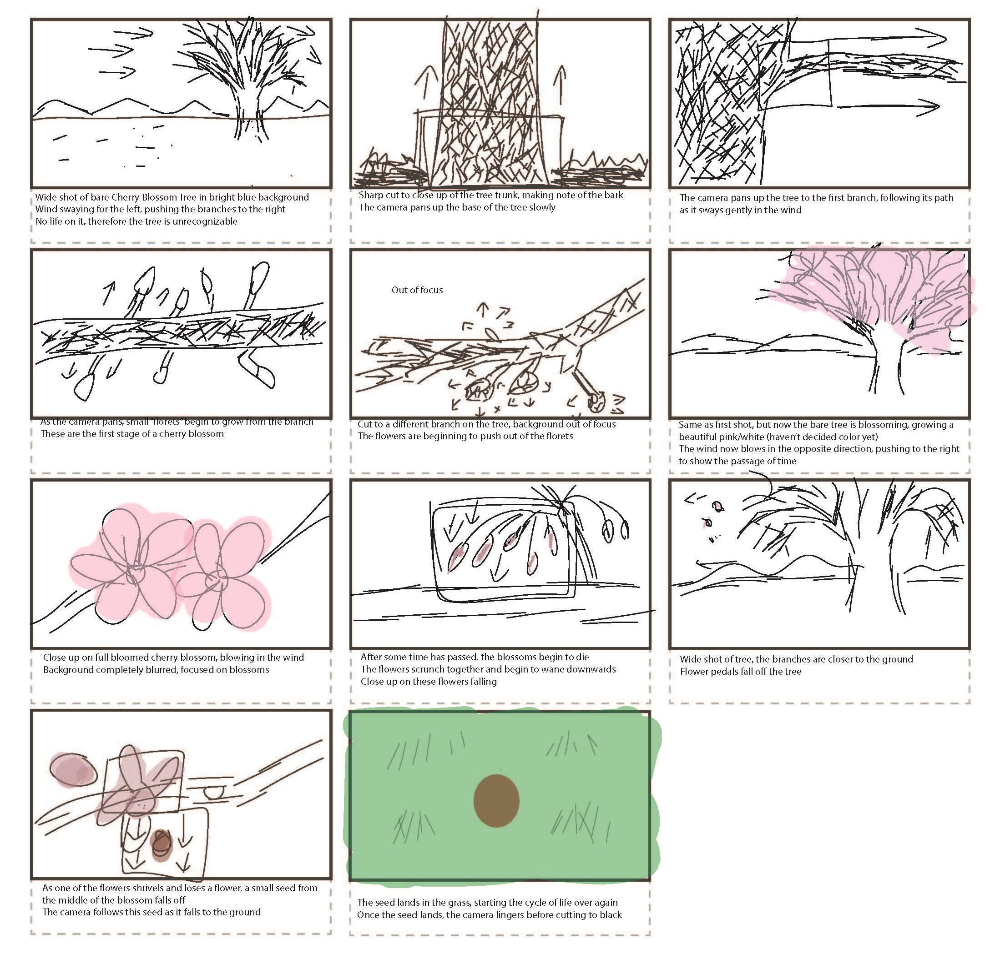

"Rebirth" is a short animation that tells the life cycle of a cherry blossom tree, from blossoming to its eventual death. In Japanese culture, cherry blossoms are representative of renewal and new beginnings, which is a topic I wanted to explore.
This was created for my 3D Studio class in my sophomore year of college. The original goal of the project was to create an animation that tells a journey.
Process

I started out by creating a storyboard for the animation. The extreme closeups of the flowers were inspired by various nature documentaries.
Next, I went into Blender and modeled the flower pedals and stem, looking closely at real world cherry blossoms.